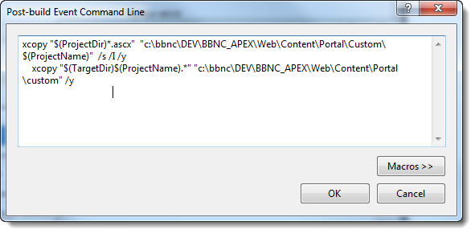
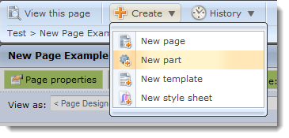
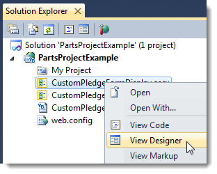
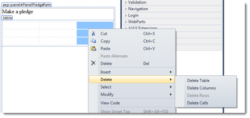
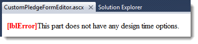
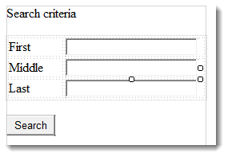
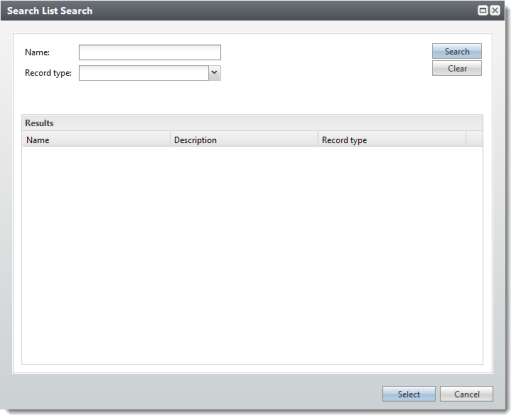

Custom Framework Parts
Note To create custom framework parts, you also need access to Custom parts in Blackbaud Internet Solutions, the ability to create part types, parts, and to add parts to a page. Knowledge of ASP.NET, user controls, Visual Basic, HTML and JavaScript is required. You also need access to upload the custom framework parts files to the server which hosts Blackbaud Internet Solutions.
To define a custom part, you create two standard ASP.NET (.ascx) user controls. You create an Editor Control to edit the content for the part, and you create a Display Control to render that content on a web page.

Each user control is derived from a corresponding base class in the BBNCExtensions.dll assembly in the \bin folder of your installation directory. Each control inherits the API and Content properties that provide full access to the API and the content stored for your part.
The Editor Control creates a user interface in Blackbaud Internet Solutions to edit the part’s content, while the Display Control provides the code and markup to render the content on a web page. While the Blackbaud Internet Solutions framework offers the correct user control at the correct time, it is up to your user controls to share common knowledge about the type of content that they edit, store, and render.
Note The framework handles persisting simple content and providing it to each control when it is needed. This allows you to focus on custom functionality and leave the mechanics to the platform. However, if you include complex content from other systems or content that references other Blackbaud Internet Solutions (BBIS) tables, it is up to you to code the controls to manage the storage and retrieval of that content.
Blackbaud Internet Solutions and your custom parts are built on the Microsoft ASP.NET platform, so your custom parts can take advantage of a wealth of standard APIs and services from the .NET framework, as well as a variety third-party .NET based components.
After you create custom parts, you use the Infinity SDK to store and retrieve data. You can access existing data in BBIS through the *.WebApiClient.dlls available in the SDK. And you can create Infinity tables and CRUD processes with the SDK and then generate your own *.WebApiClient.dlls to access these tables for your custom parts.
Use the Infinity SDK with Custom Framework Parts
Previously, a part’s content was a serialized object that was stored and retrieved in the database by the CMS framework. A part defined the content class which the Editor and Display controls both knew about, and the framework delivered content to each control and offered functions to save it back to the database. This old concept is still supported and can be useful in some cases, such as the HTML (FTI) part that just stores one blob of HTML and has no need for SQL joins to other tables. In the SDK item template for a part, you get the boilerplate code to support this approach automatically (see the MyContent property). You can use it or ignore it.
However, the SDK now allows you to create tables for a part’s content. You can use Infinity practices to define the table and its CRUD procedures via Infinity Specs. Then you can use the Infinity MetalWeb code generator to create strongly typed classes around these procedures. You can store and retrieve a part’s content data in exactly the same way as ANY Infinity data with the *.WebApiClient.dlls, which immediately makes your new content type part of the vast Infinity API.
You can also use both approaches, but be sure to keep foreign key references out of the serialized approach because this prohibits database level referential integrity, as well as the safe export and import of your part.
WebApiClient Assemblies to Access CRM Data
The SDK includes BBMetalWeb assemblies for all CRM catalogs that are easily called using standard syntax from any web client app. To use BBMetalWeb assemblies in your parts project:
- Add a reference to the *.WebApiClient.dll assembly you need, such as Blackbaud.AppFx.Constituent.Catalog.WebApiClient.dll.
- Add a reference to Blackbaud.AppFx.
- Add a reference to Blackbaud.AppFx.WebAPI.
- Add a reference to Blackbaud.Appfx.XmlTypes.
The Web Service
NetCommunity communicates with The Raiser’s Edge through a web service located near the Raiser’s Edge database. This web service is how NetCommunity retrieves all CRM data from The Raiser’s Edge, including constituents, funds, code tables, queries, and much more.
When we developed Blackbaud Internet Solutions as the Infinity version of NetCommunity, we created a service with an identical interface to communicate with Blackbaud CRM. The service fools Blackbaud Internet Solutions into thinking it is communicating with The Raiser’s Edge so that it will work as expected. The abstraction layer paid off in getting us to an Infinity version of NetCommunity in record time. In Blackbaud CRM, this service is referenced on the Web servicestab in Sites & settings.

Should you use this web service to get CRM data to and from your custom parts? Or should you use the vast array of Infinity APIs to access whatever you want? Either technique works, but here are key points to consider. As a rule of thumb, never call the service directly. The CMS framework wraps access to this service in cases where it would be advantageous for you to use, such as:
- To get a current user’s linked constituent data – handles caching, reflecting pending updates, etc.
- To get entries in a code table (caches supported common code tables such as states, titles, etc.)
- API server UI controls such as the Campaign/Funds/Appeals picker
- To prefill an API donation with constituent bio/address data
A relatively small subset of data is available through the service. You can extend the service with the API, but that only makes sense for a Raiser’s Edge installation that does not have Infinity’s rich, web-based CRM API.
Another important point about built-in CRM integration relates to record IDs. In The Raiser’s Edge, IDs (primary keys) are integers, but in Infinity, they are GUIDs. For the Blackbaud Internet Solutions version of the web service, we introduced an integer-GUID mapping concept for all Infinity tables accessed by the service. Otherwise, we would have had to change a TON of code to support GUIDs as keys to back office records, and it would no longer have worked for NetCommunity and The Raiser’s Edge.
For example, when the CMS Donation Form part stores IDs for CRM funds to include in the form, it stores them as integers. For the most part, this integer-GUID mapping is transparent and only relevant when you use the service to get CRM data, especially if you mix and match approaches. It’s also important to know that certain API functions such as recording a donation expect integers for back office IDs (such as the designation and fund IDs on a donation). If you get designations from the service, you already have the integers. But if you get the IDs yourself, you have GUIDs and need to look up the integer-GUID mapping yourself to create an API donation transaction.
Built-in Transactions
As originally designed for The Raiser’s Edge, Blackbaud NetCommunity collects transactions for user sign-ups, constituent profile updates, donations, memberships, event registrations, and volunteering. These transactions are delivered to the CRM in a holding pen where users can review and approve them before importing the transactions into the CRM.
Only user signups, profile updates, and donations are supported in the API.
This support allows custom parts to capture these transactions and use the built-in web service to deliver them to Blackbaud CRM, where they benefit from the same review process. These transactions are also supported in Blackbaud Internet Solutions, and the InfinityPartSample2 shows a donation form in action. The donations API is particularly powerful because it also handles the clearing of credit cards, emailing of acknowledgements, and creation of donation transactions for download.
If you need to go outside the box, the transaction delivery pipe is not available, and you must find your own route to record your transaction in Blackbaud CRM. You can record transactions directly to the database with WebApiClient.dll wrappers, or you can create your own holding pen with a user interface to review and approve transactions in Blackbaud CRM.
Debugging
For debugging, attach Visual Studio to all running w3wp processes and set the breakpoints you want.

Creating Custom Framework Parts Projects
The SDK includes a project template to create a CMS Parts Project. The Parts project template creates an empty project with a reference the BBNCExtensions assembly, which is your key to the custom parts universe.
This Part template creates the scaffold of a CMS part that consists of three project items.
- A web user control (ASCX) for the Display Control that provides the code and markup to render content on a web page.
- A web user control (ASCX) for the Editor Control that creates a user interface to edit the part’s content.
- A class to hold the part’s content/properties (optional).
To deploy the custom part to your website, you must copy its files to the appropriate folders on your web server and then add the part to the Custom parts gallery in Administration. You can configure post-build events in to copy the files.
Warning These steps require Visual Studio and the Infinity SDK. For more information about how to create a developer environment, see Development Environment.
Note Subsequent tasks may require Administrator rights to folders on your developer machine. If you do not have Administrator rights enabled by default, you may have to run Visual Studio as an Administrator.
- Open Visual Studio.
-
From Visual Studio, click File > New > Project.

-
From the New Project screen, select Visual Basic > Blackbaud AppFx > Parts Project.

-
Change the project and solution name.

- Click OK. The solution appears.
- Save the project.
Custom Framework Parts Creation
Custom parts are comprised of two ASP.NET user controls. It is assumed that the machine where you create custom parts has Blackbaud Internet Solutions installed along with IIS and Visual Studio 2008 or 2010 for the development environment.
- Editor Control
- Creates the user interface to edit the part's content in Blackbaud Internet Solutions.
- Display Control
- Provides the code and markup to render the content on a web page.
The content for custom parts can come from a variety of sources. Content can be as simple as text or HTML stored in the BBIS database, or it can be data from the back office such as constituent giving history in Blackbaud CRM. Custom parts store content in the BBIS database, whether it’s the actual content or just the location of the content. Custom parts also store any design options for display or behavior in the database. Depending on the content, the Editor Control offers a place to edit the content or parameters to locate remote content. The Editor Control also allows users to edit design-time settings properties for display and behavior.
A custom part also has a code-behind DLL assembly. This is where the part’s executable code lives for all of its associated user controls. This is a common ASP.NET practice.
To install a custom part, you place all non-compiled files (.ascx files, images files, .js files, etc.) in the \NetCommunity\Custom folder of your installation directory. We recommend that you create subfolders in the \NetCommunity\Custom folder for each of your custom parts. In addition, you place all compiled files (your code behind DLL) and required references (.dll) in the \NetCommunity\bin folder.
Note If you do not have a \Custom folder in the \NetCommunity folder for your installation directory, you must create one.
After your files are in place, you can add custom parts to Blackbaud Internet Solutions from the Custom parts gallery in Administration. After this, the part is ready for use.
Add a Custom Framework Part to a Parts Project
Tip Sometimes part types are referred to as parts. But parts are instances of part types. Custom parts are actually custom part types. You can create a part based on a custom part (type).
- Open the Parts project.
-
From Solution Explorer, right-click the project and select Add > New Item. The Add New Item screen appears.

-
Select Visual Basic > Blackbaud AppFx CMS > Part.

-
Change the name.

-
Click Add. The part is added to the project.

- Save the project.
Adjust the Post-build Events
- Ensure the Parts project is open.
-
From Solution Explorer, right-click the project and select Properties.

The Properties appear.

-
Click Compile.

-
Click Build Events.

The Build Events screen appears.

-
Click Edit Post-build.

The Post-build Event Command Line screen appears. There are template XCOPY commands in the editor. These commands copy files from the built project to the BBIS installation.
 -
Clear the template commands in Post-build event command line and replace the commands with these:
Adjust the paths for your BBIS installation. The first line copies the ASCX forms and the second line copies the DLL for the Part. Once you begin to reference other items in the project, such as API DLLs, you may have to add or adjust lines. For example, this will copy WebAPIClient DLLs:
xcopy "$(ProjectDir)*.ascx" "C:\Program Files\Blackbaud\NetCommunity\Custom\$(ProjectName)" /s /I /y xcopy "$(TargetDir)$(ProjectName).*" "C:\Program Files\Blackbaud\NetCommunity\Bin\" /yxcopy "$(TargetDir)*.WebApiClient.*" "C:\Program Files\Blackbaud\NetCommunity\Bin\" /y - Click OK. You return to the Build Events screen.
- Click OK. You return to the project's properties.
- Save the project.
Copy the Files for a Custom Framework Part
- In Visual Studio, open the properties sheet for the Parts project.
-
On the Compile tab, click Build Events. The Build Events screen appears.

-
Click Edit Post-build. The Post-build Event Command Line appears.

-
In the command line edit window, replace the default post-build event commands with the following commands and then replace the destination paths with the locations in your installation directory:
copy "$(ProjectDir)*.ascx" "C:\Infinity\DEV\Firebird\ClassicCMS\Web\Content\Portal\Custom\$(ProjectName)" /s /I /y xcopy "$(TargetDir)$(ProjectName).*" "C:\Infinity\DEV\Firebird\ClassicCMS\Web\Content\Portal\bin" /y xcopy "$(TargetDir)*.WebApiClient.*" "C:\Infinity\DEV\Firebird\ClassicCMS\Web\Content\Portal\bin" /y - Replace the destination paths in the commands with the appropriate locations in your installation directory. Remember to place your .ascx files in the \custom folder or a subfolder and your code-behind DLL and any *.webApiClient.dlls in the \bin folder.
-
When you successfully recompile, these commands copy files to your installation folder.
- The first command copies.ascx user controls from your project to the \NetCommunity\Custom folder or a subfolder. In our example, the command copies the file to the \Hello subfolder.
- The second command copies the DLL to the \bin folder of your installation. The command includes “$(ProjectName)” to ensure that you only copy the DLL for your project and not other DLLs that you reference that are in the \bin folder.
Note For more complex custom parts, you can add commands to copy related files such as images, scripts, and style sheets.
Test the Build and Post-build Commands
- Open the Parts project.
-
Right-click the project and select Build. A successful build should look like this in the Output window:
------ Build started: Project: PartsProjectExample, Configuration: Debug Any CPU ------ PartsProjectExample -> C:\Users\TomTr\Documents\Visual Studio 2010\Projects\PartsProjectExample\PartsProjectExample\bin\PartsProjectExample.dll C:\Users\TomTr\Documents\Visual Studio 2010\Projects\PartsProjectExample\PartsProjectExample\PartExampleDisplay.ascx C:\Users\TomTr\Documents\Visual Studio 2010\Projects\PartsProjectExample\PartsProjectExample\PartExampleEditor.ascx 2 File(s) copied C:\Users\TomTr\Documents\Visual Studio 2010\Projects\PartsProjectExample\PartsProjectExample\bin\PartsProjectExample.dll C:\Users\TomTr\Documents\Visual Studio 2010\Projects\PartsProjectExample\PartsProjectExample\bin\PartsProjectExample.pdb C:\Users\TomTr\Documents\Visual Studio 2010\Projects\PartsProjectExample\PartsProjectExample\bin\PartsProjectExample.xml 3 File(s) copied ========== Build: 1 succeeded or up-to-date, 0 failed, 0 skipped ==========Without Administrator rights, the output will look something like this:
------ Build started: Project: PartsProjectExample, Configuration: Debug Any CPU ------ PartsProjectExample -> C:\Users\TomTr\Documents\Visual Studio 2010\Projects\PartsProjectExample\PartsProjectExample\bin\PartsProjectExample.dll C:\Users\TomTr\Documents\Visual Studio 2010\Projects\PartsProjectExample\PartsProjectExample\PartExampleDisplay.ascx Access denied C:\Users\TomTr\Documents\Visual Studio 2010\Projects\PartsProjectExample\PartsProjectExample\bin\PartsProjectExample.dll Access denied c:\Windows\Microsoft.NET\Framework\v4.0.30319\Microsoft.Common.targets(3717,9): error MSB3073: The command "xcopy "C:\Users\TomTr\Documents\Visual Studio 2010\Projects\PartsProjectExample\PartsProjectExample\*.ascx" "C:\Program Files\Blackbaud\NetCommunity\Custom\PartsProjectExample" /s /I /y c:\Windows\Microsoft.NET\Framework\v4.0.30319\Microsoft.Common.targets(3717,9): error MSB3073: xcopy "C:\Users\TomTr\Documents\Visual Studio 2010\Projects\PartsProjectExample\PartsProjectExample\bin\PartsProjectExample.*" "C:\Program Files\Blackbaud\NetCommunity\Bin\" /y" exited with code 4. ========== Build: 0 succeeded or up-to-date, 1 failed, 0 skipped ========== -
Browse to the files in Windows Explorer.

Add a Custom Framework Part to Blackbaud Internet Solutions
- Log into BBIS as a supervisor and navigate to the Administration page.
-
Click Custom parts.

The Custom Parts page appears.

- Click New custom part.

- In Name, enter a name for the custom part (type).
-
In Display Control Source, enter the path to the ASP.NET display user interface (ASCX file) that the post-build events copied to the BBIS installation. For example: Custom/PartsProjectExample/PartExampleDisplay.ascx.
Warning Enter a virtual path. Otherwise, you will get an error message like this:

-
In Edit Control Source, enter the path to the ASP.NET editor user interface (ASCX file) that the post-build events copied to the BBIS installation. For example: Custom/PartsProjectExample/PartExampleEditor.ascx

- Select the Requires SSL checkbox if the part contains, displays, or collects, sensitive data, such as credit card information. When you select this checkbox and you configure an SSL certificate on your web site, any page to which you add this part will use a secure (https://) URL.
- Click Save
Tip Sometimes part types are referred to as parts. But parts are instances of part types. Custom parts are actually custom part types. You can create a part based on a custom part (type).
Create a Part Based on a Custom Framework Part Type
-
Click Create > New part.

The New Part Webpage Dialog appears. -
From Part type, click the binoculars. Selections for part (type) appear.

-
Scroll or browse to the custom part (type).

- Enter a name for the new part. Do not use the same name as the custom part (type). The name must be unique.
-
Click Next. A tabbed set of options appears. You can adjust those as necessary. For more information, see Website Design Guide.
Warning If the version of the reference to BBNCExtensions.dll in your parts project does not match the version of the BBNCExtensions.dll used the compiler (BBIS), you may get an error like this:

To correct this error, you can change the reference in your parts project to the copy of the DLL used by the compiler (BBIS). For more information, continue to the next section.
- Click Save. The new part is created.
Change the Reference for BBNCExtensions.dll
- Open the Parts project.
- From Solution Explorer, right-click the project and select Properties. The project's properties appear.
- Click References.
-
Select the existing reference to BBNCExtensions.dll and click Remove.

-
Click Add. The Add Reference screen appears.

-
Click the Browse tab. Browse to BBNCExtensions.dll in the BBIS installation. For example: C:\Program Files\Blackbaud\NetCommunity\Bin\BBNCExtensions.dll.

- Click OK.
- Save the project. Then build the project.
Custom Pledge Form
This example includes step-by-step instructions to create a custom part that meets these design requirements and learning objectives:
Design requirements: Create a custom pledge form for Blackbaud Internet Solutions
- Any required field for a pledge transaction that is not on this form will be defaulted or calculated in some way.
- Name information for the user will appear at the top of the form.
-
If the user is logged in
- form will be populated with that login’s user information
- fields will be read-only
-
If the user is not logged in
- form will not be populated
- fields will be writeable
-
If the user is logged in
- Email address will be populated with constituent or login information when possible. But it will be writeable and include simple email address format validation. For linked users, when the email address is changed, a new email addressed will be added to the constituent record in Blackbaud CRM.
- Amount will handle US currency values.
- When the user hits the Pledge button, something will be sent to Infinity via a web API. This will be either custom content created with the Infinity SDK or a new pledge transaction. This demonstrates using an the web API for an Add Data Form to write to an Infinity record, one out-of-the box and one created with the SDK.
- The behavior of the Pledge button will be configurable by a Blackbaud Internet Solutions administrator. Here are the two options:
- Write to a custom content table created with Infinity SDK
- For non-linked logins, write to a custom content table and for linked logins create pledge transaction in Infinity for that constituent
Objectives
- Configure Infinity application (selected items)
- Create parts projects
- Add custom parts to parts projects
- Create a custom form (UI design)
- Create a custom form (form behavior)
- Add Infinity record customizations for Blackbaud Internet Solutions parts
- Add a configuration setting to a custom form (UI design)
- Prepare to use Infinity API assemblies in a Blackbaud Internet Solutions custom part
- Create a custom form (write logic implementation)
Add a Designation to Infinity
Note This is a dependency for the custom pledge form example. Designations are probably already configured for Fundraising in your Infinity solution. However, if you are developing in an installation that has not been configured, these are the minimum steps to establish a designation. For information about fundraising hierarchies and designations, see Fundraising Guide.
- Ensure there is at least one fundraising purpose type. This a dependency for fundraising hierarchies. You can add a fundraising purpose type from Fundraising > Configuration > Fundraising purpose types.
Note If this option does not appear under Configuration, go to Administration > Application > Features and search for fundraising purpose types functionality. There are Add and Edit Data Forms and a delete record operation. Fundraising purpose types are stored as a simple data list.
- Ensure there is at least on fundraising hierarchy. This is a dependency for designations. You can add a fundraising hierarchy from Fundraising > Configuration > Fundraising hierarchies.
- Ensure there is at least one designation. This is a dependency for the sample donation form. You can add a designation from Fundraising > Configuration > Fundraising hierarchies.
Ensure Post Dates are Configured
Note This is a dependency to create a Revenue transaction. For more information about general ledger setup, see the General Ledger Setup chapter of the Administration Guide.
- From the Infinity application such as Blackbaud CRM, navigate to Administration.
-
Click General Ledger setup.

-
Click the account system.

-
Fully configure the account system. Or, if General Ledger functionality is not needed, under Configuration, select the task to Disable General Ledger.

Create a Custom Pledge Form (Design)
- Open your Parts project in Visual Studio. This example uses a project called PartsProjectExample.
- Add a new custom part (type) to the project called CustomPledgeForm.
-
A VB file may appear in an editor. For example, CustomPledgeFormProperties.vb may appear. You will use this file later. But for now, close the VB files for properties and take a look at Solution Explorer

-
Open CustomPledgeFormDisplay.ascx for editing in Designer. Right-click CustomPledgeFormDisplay.vb and select View Designer.

Right-clicking...

The ASCX form appears in Design Mode.

-
Click View > Toolbox. The Toolbox appears.

-
Add a break after [lblError]. You can place the cursor after the text and press ENTER.

-
Add a Panel to the form. Adjust the height and width so that there is space to work in.

-
Change the panel ID to PanelPledgeForm. To adjust the panel properties, you can right-click the panel and select Properties.

The Properties window appears. ID is probably at the bottom.

Changing Panel1 to PanelPledgeForm...

-
Add a label inside the Panel.

- Change the label ID to LabelPledgeForm. Change the text of the label to Make a pledge.
- Add a line break. Place the cursor next to the label and press ENTER.
-
Add an HTML Table.

-
Delete the right-most column so that there are three rows and two columns.
 - Adjust the widths of the columns as necessary.
-
Add a Label to each of the cells in the left column. Change the text to First, Middle, and Last respectively. Change the IDs to LabelFirst, LabelMiddle, and LabelLast.

-
Add a TextBox to each of the cells in the right column. Change the IDs to TextBoxFirst, TextBoxMiddle, TextBoxLast respectively.

- Add a break after the table.
- Add a Label for Email address and a break after that. Change the ID for the Label to LabelEmail.
- Add a break.
- Add a TextBox for email address. Change the ID for the TextBox to TextBoxEmail.
- Add a break.
- Add a Label for Amount. Change the ID for the Label to LabelAmount.
- Add a break.
- Add a TextBox for amount. Change the ID for the TextBox to TextBoxAmount.
- Add a break.
-
Add a Button with the text Pledge. Change the ID for the Button to ButtonPledge.

Create a Custom Pledge Form Editor (Design)
- Open your Parts project in Visual Studio.
-
Open CustomPledgeFormEditor.ascx for editing in Designer.
 - Delete the label that contains this text: "This part does not have any design time options"
- Add a break.
- Create the interface for the form's configuration option. The option is to which record to write pledge information:
- Write to a custom content table created with the Infinity SDK
- For non-linked logins and anonymous users, write to a custom content table and for linked logins create a pledge transaction in Infinity for that constituent.
-
Add a CheckBox with this Text and ID:
- Only write to custom pledge record
- CheckBoxOnlyWriteToCustomPledgeRecord
-
Add some paragraphs with this explanation:
- When this is selected, any time the Pledge button is clicked, the details will be written to the custom pledge record USR_CUSTOMPLEDGE using the custom pledge Add Data Form accessed through a BBMetalWeb generated DLL.
-
When this is not selected, for logged in users with linked accounts, the details will be written to a new pledge transaction using a DLL to access a web API. For anonymous users, the information will be written to USR_CUSTOMPLEDGE using the custom pledge Add Data Form accessed through a BBMetalWeb-generated DLL.

- Save the form.
Populate the Name Fields
- From Visual Studio, open the code-behind VB file for CustomPledgeFormDisplay.ascx (CustomPledgeFormDisplay.ascx.vb).
- Create a InitializeForm Sub for the custom pledge form.
-
Call the InitializeForm Sub from the Page_Load Sub.
Protected Sub Page_Load(ByVal sender As Object, ByVal e As System.EventArgs) Handles Me.Load InitializeForm() End Sub - In the InitializeForm sub, check to see whether the current user is anonymous. Use the CurrentUser property in the BBNCExtensions.API.Users namespace to get the current user. Users have the IsAnonymous property.
-
Create a conditional that uses the value of the check as a condition. If the user is not anonymous, assign FirstName for CurrentUser to the text of TextBoxFirst and LastName to TextBoxLast. Then disable each name field by setting the Enabled property for the field to False. If the user is anonymous, leave the fields alone.
Private Sub InitializeForm() 'If there is a login, get the first and last name for the logged in user. 'Populate the First and Last fields on the form. Disable the First, Middle, 'and Last fields. Otherwise, leave the fields enabled and writeable. If Not API.Users.CurrentUser.IsAnonymous Then TextBoxFirst.Text = API.Users.CurrentUser.FirstName TextBoxLast.Text = API.Users.CurrentUser.LastName TextBoxFirst.Enabled = False TextBoxMiddle.Enabled = False TextBoxLast.Enabled = False End If End Sub -
After you build the project and copy the files to your BBIS installation, the part should behave as follows: When accessed without logging in...

While logged in, as Supervisor in this case...

Track the Record Option
- Open the form properties VB file that was created when you added the custom part (type). For example, open CustomPledgeFormProperties.vb.
- Declare a Boolean variable that tracks whether to write only to the custom pledge record:
Public OnlyWriteToCustomPledgeRecord As Boolean -
Save the file. The display and editor forms will check this variable to determine which record to use.
Public Class CustomPledgeFormProperties Public OnlyWriteToCustomPledgeRecord As Boolean End Class
Add Infinity Web API References
- Open the Parts project.
- From Solution Explorer, right-click the project and select Properties. The project's properties appear.
- Click References.
-
Click Add. The Add Reference screen appears.
- Click the Browse tab. Browse to the Bin folder in your BBIS installation. For example: C:\Program Files\Blackbaud\NetCommunity\Bin
-
Select these DLLs:
- Blackbaud.AppFx
- Blackbaud.AppFx.WebAPI
- Blackbaud.Appfx.XmlTypes

- Click OK.
- Save the project. Then build the project.
Constituent Search
This example includes step-by-step instructions to create a custom part that meets these design requirements and learning objectives:
Design requirements: Create a custom individual search (Blackbaud CRM constituent) form for Blackbaud Internet Solutions
- A label will appear at the top of the display form. The label's text depends on a constituency selected in the editor form.
-
-
If All is selected on the editor form:
Individual Search -
If a constituency is selected on the editor form:
Individual Search: <constituency> constituency -
For example:
Individual Search: Staff constituency
-
If All is selected on the editor form:
- The display form will include a Search criteria section that includes labels and text boxes for first, middle, and last name.
- The display form will include a Search button. When clicked, the search button will initiate a individual constituent search in the Blackbaud CRM database. The search will be filtered by constituency depending on the selection on the editor form.
- The display form will include a First result section that shows the name, primary email address, and primary phone number for the first constituent returned by the search. If no email address or phone is found, the label will indicate that. If no results are returned, this section will indicate that.
- The display form will include an All results section that lists all of the constituents returned by the search.
- The editor form will include a radio button list that includes items for each system and user-defined constituency. The list will also include an All item to indicate to perform a search that is not filtered by constituency.
- The editor form will include text that explains the configuration option:
- Select the constituency on which to filter the individual search.
Objectives
- Create parts projects
- Add custom parts to parts projects
- Create a custom form (UI design)
- Create a custom form (form behavior)
- Add a configuration setting to a custom form (UI design)
Create a Custom Constituent Search (Design)
-
Open your Parts project in Visual Studio. This example uses a project called SearchPartExample.

- Add a new custom part (type) to the project called CustomSearchForm.
-
A VB file may appear in an editor. For example, CustomSearchFormProperties.vb may appear. You will use this file later. But for now, close the VB files for properties and take a look at Solution Explorer.

-
Open CustomSearchFormDisplay.ascx for editing in Designer. Right-click CustomSearchFormDisplay.vb and select View Designer.

Right-clicking...

The ASCX form appears in Design Mode.

-
Click View > Toolbox. The Toolbox appears.

-
Add a break after [lblError]. You can place the cursor after the text and press ENTER.

- Add two Panels to the form. Order the panels vertically and adjust the height and width so that there is space to work in.
-
Change the panel IDs to PanelSearchFormEntry and PanelSearchFormResults. To adjust the panel properties, you can right-click the panel and select Properties.

The Properties window appears. ID is probably at the bottom. Changing Panel1 to PanelSearchFormEntry...

-
Add a label inside the first Panel.

-
Change the label ID to LabelSearchFormEntry. Change the text of the label to Search criteria.

-
Add a break and an HTML table with labels and text boxes for name information. Also, add a button with Search as the text.
Text Control ID First System.Web.UI.WebControls.Label LabelFirst Middle System.Web.UI.WebControls.Label LabelMiddle Last System.Web.UI.WebControls.Label LabelLast System.Web.UI.WebControls.TextBox TextBoxFirst System.Web.UI.WebControls.TextBox TextBoxMiddle System.Web.UI.WebControls.TextBox TextBoxLast Search System.Web.UI.WebControls.Button ButtonSearch -
To the second panel, add fields for results.
Text Control ID Name System.Web.UI.WebControls.Label LabelName Email System.Web.UI.WebControls.Label LabelEmail Phone System.Web.UI.WebControls.Label LabelPhone
Create a Custom Constituent Search Editor (Design)
- Open your Parts project in Visual Studio.
-
Open CustomSearchFormEditor.ascx for editing in Designer.

- Delete the label that contains this text: "This part does not have any design time options"
- Add a break.
-
Create the interface for the form's configuration options. The options are constituencies on which to filter:
- Add a RadioButtonList.
- Change the ID to RadioButtonListConstituencies.
-
From the list tasks menu, select Edit Items. The ListItem Collection Editor screen appears.
Note This is only to add some defaults so that the editor form shows something in the IDE. The members of the collection will be populated dynamically based on Infinity constituencies retrieved with the Infinity web API.

- Click Add. A new member of the collection is added.
- From Text, enter Board member
-
Add members for Donor, Fundraiser, and Volunteer.

- Click OK.
-
Add text that explains the options:
Select constituency on which to filter the individual search.

- Save CustomSearchFormEditor.ascx.
Track the Selected Constituencies
- Open the form properties VB file that was created when you added the custom part (type). For example, open CustomSearchFormProperties.vb.
-
Declare Boolean variables that track which constituency was selected on the editor form:
Public Class CustomSearchFormProperties Public Constituency As String Public ConstituencyID As System.Guid Public SearchAll As Boolean End Class - Save the file. The display and editor forms will check these variables to determine which record to use.
Add Infinity Web API References
- Open the Parts project.
- From Solution Explorer, right-click the project and select Properties. The project's properties appear.
- Click References.
-
Click Add. The Add Reference screen appears.
- Click the Browse tab. Browse to the Bin folder in your BBIS installation. For example: C:\Program Files\Blackbaud\NetCommunity\Bin
-
Select these DLLs:
- Blackbaud.AppFx
- Blackbaud.AppFx.WebAPI
- Blackbaud.Appfx.XmlTypes
- Click OK.
- Save the project. Then build the project.
Change the Top Label Based on Selected Constituency
To change a label based on the part's content properties, in the display form code (CustomSearchFormDisplay.ascx.vb), add this for the page load:
Protected Sub Page_Load(ByVal sender As Object, ByVal e As System.EventArgs) Handles Me.Load
If MyContent.Constituency = "All" Then
LabelConstituency.Text = "Individual Search"
Else
LabelConstituency.Text = "Individual Search: " + MyContent.Constituency + " constituency"
End If
End SubmContent is an instance of a properties class called CustomSearchFormProperties, which is a part of the project.
Public Class CustomSearchFormProperties
Public Constituency As String
Public ConstituencyID As System.Guid
Public SearchAll As Boolean
End ClassFind an Infinity Search for a Constituent
-
Open the Infinity web client. For example:

-
Navigate to Administration > Application > Features > Search list search. The Search List Search screen appears.
 -
In Name, enter Constituent and click Search.

-
Select the search list with the name Constituent Search. The metadata page for the search list appears.

Note the System record ID for the search list: 23c5c603-d7d8-4106-aecc-65392b563887
Find the API DLL for the Constituent Search
Please refer to Find the API DLL for the Pledge Add Form (and add a reference to it). But look for constituent search instead.
Functions to Search for Individuals in Infinity
Private Function ReturnIndividualSearchIDs(ByVal ConstituencyID As System.Guid)
'This is for the case where a constituency is chosen.
'Return an array of String that contains IDs for individuals in Infinity.
'Access an individual search feature in Infinity with the Constituent catalog
'web API WebAPIClient DLL. Only return results for the constituency chosen
'in the part's editor. The get IDs request requires a sevice provider.
'The service provider is established by Blackbaud Internet Solutions:
'Me.AP.AppFxWebServiceProvider. This uses BBNCExtensions.
Dim IndividualSearchFilter As New Blackbaud.AppFx.Constituent.Catalog.WebApiClient.SearchLists.Constituent.IndividualSearchFilterData
Dim IndividualIDs As String()
IndividualSearchFilter.FIRSTNAME = TextBoxFirst.Text
IndividualSearchFilter.MIDDLENAME = TextBoxMiddle.Text
IndividualSearchFilter.KEYNAME = TextBoxLast.Text
IndividualSearchFilter.INCLUDEINDIVIDUALS = True
IndividualSearchFilter.INCLUDEGROUPS = False
IndividualSearchFilter.INCLUDEINACTIVE = False
IndividualSearchFilter.INCLUDENONCONSTITUENTRECORDS = False
IndividualSearchFilter.INCLUDEORGANIZATIONS = False
IndividualSearchFilter.CONSTITUENCY = ConstituencyID
IndividualIDs = Blackbaud.AppFx.Constituent.Catalog.WebApiClient.SearchLists.Constituent.IndividualSearch.GetIDs(Me.API.AppFxWebServiceProvider, IndividualSearchFilter)
Return IndividualIDs
End Function
Private Function ReturnIndividualSearchIDs()
'This is for the case where a All is chosen for constituency.
'Return an array of String that contains IDs for individuals in Infinity.
'Access an individual search feature in Infinity with the Constituent catalog
'web API WebAPIClient DLL. The get IDs request requires a sevice provider.
'The service provider is established by Blackbaud Internet Solutions:
'Me.AP.AppFxWebServiceProvider. This uses BBNCExtensions.
Dim IndividualSearchFilter As New Blackbaud.AppFx.Constituent.Catalog.WebApiClient.SearchLists.Constituent.IndividualSearchFilterData
Dim IndividualIDs As String()
IndividualSearchFilter.FIRSTNAME = TextBoxFirst.Text
IndividualSearchFilter.MIDDLENAME = TextBoxMiddle.Text
IndividualSearchFilter.KEYNAME = TextBoxLast.Text
IndividualSearchFilter.INCLUDEINDIVIDUALS = True
IndividualSearchFilter.INCLUDEGROUPS = False
IndividualSearchFilter.INCLUDEINACTIVE = False
IndividualSearchFilter.INCLUDENONCONSTITUENTRECORDS = False
IndividualSearchFilter.INCLUDEORGANIZATIONS = False
IndividualIDs = Blackbaud.AppFx.Constituent.Catalog.WebApiClient.SearchLists.Constituent.IndividualSearch.GetIDs(Me.API.AppFxWebServiceProvider, IndividualSearchFilter)
Return IndividualIDs
End FunctionAdd code to return constituent IDs for individuals. One function returns IDs for all individuals. The other function returns IDs based on a constituency.
Functions to Return Constituent Information
Add code that uses the Infinity web API to retrieve and return constituent information.
Private Function GetConstituentSummary(ByVal ConstituentID As System.Guid)
'Use the Constituent catalog WebAPIClient DLL to get constituent summary
'information from Infinity. The create request and load data calls
'require a sevice provider. The service provider is established by Blackbaud
'Internet Solutions: Me.AP.AppFxWebServiceProvider. This uses BBNCExtensions.
'The load data call uses the constituent summary request. Return the summary.
Dim _ConstituentSummary As New Blackbaud.AppFx.Constituent.Catalog.WebApiClient.ViewForms.Constituent.ConstituentSummaryProfileViewFormData
Dim ConstituentSummaryReq = Blackbaud.AppFx.Constituent.Catalog.WebApiClient.ViewForms.Constituent.ConstituentSummaryProfileViewForm.CreateRequest(Me.API.AppFxWebServiceProvider)
ConstituentSummaryReq.RecordID = ConstituentID.ToString
_ConstituentSummary = Blackbaud.AppFx.Constituent.Catalog.WebApiClient.ViewForms.Constituent.ConstituentSummaryProfileViewForm.LoadData(Me.API.AppFxWebServiceProvider, ConstituentSummaryReq)
Return _ConstituentSummary
End Function
Private Function GetConstituentName(ByVal ConstituentID As System.Guid)
'Use the Constituent catalog WebAPIClient DLL to get constituent name
'information from Infinity. The create request and load data calls
'require a sevice provider. The service provider is established by Blackbaud
'Internet Solutions: Me.AP.AppFxWebServiceProvider. This uses BBNCExtensions.
'The load data call uses the constituent name request. Return the name data.
Dim _ConstituentName As New Blackbaud.AppFx.Constituent.Catalog.WebApiClient.ViewForms.Constituent.ConstituentFirstNameLastNameViewFormData
Dim ConstituentNameReq = Blackbaud.AppFx.Constituent.Catalog.WebApiClient.ViewForms.Constituent.ConstituentFirstNameLastNameViewForm.CreateRequest(Me.API.AppFxWebServiceProvider)
ConstituentNameReq.RecordID = ConstituentID.ToString
_ConstituentName = Blackbaud.AppFx.Constituent.Catalog.WebApiClient.ViewForms.Constituent.ConstituentFirstNameLastNameViewForm.LoadData(Me.API.AppFxWebServiceProvider, ConstituentNameReq)
Return _ConstituentName
End FunctionProcedure for Display
Add code to display constituent information.
Private Sub DisplayIndividualInformation(ByVal ConstituentSummary As Blackbaud.AppFx.Constituent.Catalog.WebApiClient.ViewForms.Constituent.ConstituentSummaryProfileViewFormData,
ByVal ConstituentName As Blackbaud.AppFx.Constituent.Catalog.WebApiClient.ViewForms.Constituent.ConstituentFirstNameLastNameViewFormData)
'Display consituent name and summary information. The information is passed
'to this procedure.
If ConstituentName.FIRSTNAME <> "" Then
LabelName.Text = ConstituentName.FIRSTNAME.ToString + " " + ConstituentName.KEYNAME.ToString
Else
LabelName.Text = ConstituentName.KEYNAME + " (last name only)"
End If
If ConstituentSummary.PHONENUMBER <> "" Then
LabelPhone.Text = ConstituentSummary.PHONENUMBER.ToString
Else
LabelPhone.Text = "No phone number listed"
End If
If ConstituentSummary.EMAILADDRESS <> "" Then
LabelEmail.Text = ConstituentSummary.EMAILADDRESS.ToString
Else
LabelEmail.Text = "No email address listed"
End If
End SubButton Click for Search
Add code to perform an individual search based on the part's content (which constituency).
Protected Sub ButtonSearch_Click(ByVal sender As Object, ByVal e As EventArgs) Handles ButtonSearch.Click
Dim IndividualIDs() As String
Dim ConstituentID As System.Guid
Dim ConstituentSummary As Blackbaud.AppFx.Constituent.Catalog.WebApiClient.ViewForms.Constituent.ConstituentSummaryProfileViewFormData
Dim ConstituentName As Blackbaud.AppFx.Constituent.Catalog.WebApiClient.ViewForms.Constituent.ConstituentFirstNameLastNameViewFormData
ListBoxOtherResults.Items.Clear()
'ReturnIndividualSearchIDs returns results for all constituencies or
'results for just one depending on whether you specify a constituency ID.
If MyContent.SearchAll Then
IndividualIDs = ReturnIndividualSearchIDs()
Else
IndividualIDs = ReturnIndividualSearchIDs(MyContent.ConstituencyID)
End If
'Logic for when the button is clicked.
If IndividualIDs.Length = 0 Then
LabelName.Text = "No results"
ElseIf IndividualIDs.Length = 1 Then
ConstituentID = New System.Guid(IndividualIDs(0))
ConstituentSummary = GetConstituentSummary(ConstituentID)
ConstituentName = GetConstituentName(ConstituentID)
DisplayIndividualInformation(ConstituentSummary, ConstituentName)
Else
ConstituentID = New System.Guid(IndividualIDs(0))
ConstituentSummary = GetConstituentSummary(ConstituentID)
ConstituentName = GetConstituentName(ConstituentID)
DisplayIndividualInformation(ConstituentSummary, ConstituentName)
For Each IndResult In IndividualIDs
ConstituentID = New System.Guid(IndResult)
ConstituentName = GetConstituentName(ConstituentID)
ListBoxOtherResults.Items.Add(ConstituentName.FIRSTNAME + " " + ConstituentName.KEYNAME)
Next
End If
End SubEditor Behavior
Add code to the editor form to populate a radio button list of constituencies. Also add code to update the part's content based on the selection in the editor form.
Imports BBNCExtensions
Partial Public Class CustomSearchFormEditor
Inherits BBNCExtensions.Parts.CustomPartEditorBase
Private mContent As CustomSearchFormProperties
Protected Sub Page_Load(ByVal sender As Object, ByVal e As System.EventArgs) Handles Me.Load
End Sub
Public Overrides Sub OnLoadContent()
Dim ConstituencyAll() As Blackbaud.AppFx.Constituent.Catalog.WebApiClient.DataLists.TopLevel.ConstituencyAllDataListRow
ConstituencyAll = Blackbaud.AppFx.Constituent.Catalog.WebApiClient.DataLists.TopLevel.ConstituencyAllDataList.GetRows(Me.API.AppFxWebServiceProvider)
With MyContent
If Not Page.IsPostBack Then
RadioButtonListConstituencies.Items.Clear()
For Each Constituency In ConstituencyAll
RadioButtonListConstituencies.Items.Add(Constituency.DISPLAYNAME)
Next
RadioButtonListConstituencies.Items.Add("All")
RadioButtonListConstituencies.SelectedValue = .Constituency
End If
End With
End Sub
Public Overrides Function OnSaveContent(Optional ByVal bDialogIsClosing As Boolean = True) As Boolean
Dim ConstituencyAll() As Blackbaud.AppFx.Constituent.Catalog.WebApiClient.DataLists.TopLevel.ConstituencyAllDataListRow
ConstituencyAll = Blackbaud.AppFx.Constituent.Catalog.WebApiClient.DataLists.TopLevel.ConstituencyAllDataList.GetRows(Me.API.AppFxWebServiceProvider)
With MyContent
.Constituency = RadioButtonListConstituencies.SelectedValue
.SearchAll = False
If .Constituency = "All" Then
.SearchAll = True
Else
For Each Constituency In ConstituencyAll
If Constituency.DESCRIPTION = .Constituency Then
.ConstituencyID = Constituency.ID
End If
Next
End If
End With
Me.Content.SaveContent(MyContent)
Return True
End Function
Private ReadOnly Property MyContent() As CustomSearchFormProperties
Get
If mContent Is Nothing Then
mContent = Me.Content.GetContent(GetType(CustomSearchFormProperties))
If mContent Is Nothing Then
mContent = New CustomSearchFormProperties
End If
End If
Return mContent
End Get
End Property
End ClassBlackbaud Secure Payments
Blackbaud developer Joseph Styons has an article on the Blackbaud Developer Network. Check out his article for another great example of using Blackbaud Secure Payments in a Custom Framework Part.
Check back soon for an updated example of using Blackbaud Secure Payments.